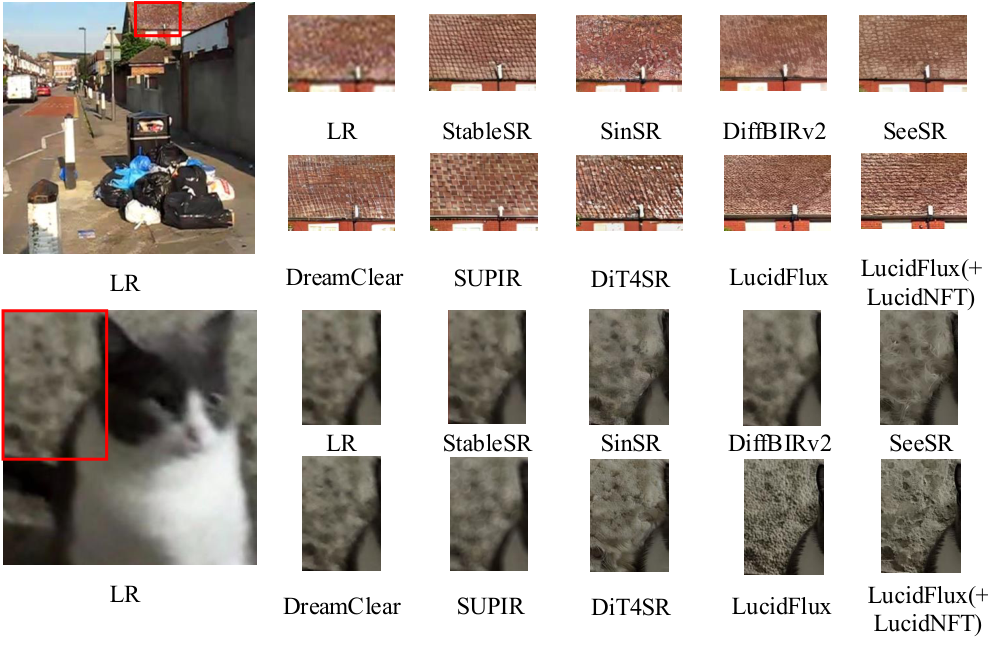

LucidNFT: LR-Anchored Multi-Reward Preference Optimization for Flow-Based Real-World Super-Resolution
†Equal Contribution *Corresponding Author
LucidNFT is a multi-reward reinforcement learning framework for flow-matching Real-ISR. It combines an LR-referenced faithfulness reward, decoupled reward normalization, and large-scale real-world degraded LR inputs to improve perceptual quality while maintaining LR-anchored consistency.
Why LucidNFT?
- Faithfulness is hard to assess without HR ground truth. Flow-based Real-ISR can synthesize sharp details from degraded LR inputs, but stochastic sampling may also create semantic or structural hallucinations unsupported by the LR evidence.
- Naive multi-reward optimization weakens preference optimization in Real-ISR. Preference optimization compares multiple stochastic rollouts conditioned on the same LR input; scalarizing heterogeneous rewards before normalization can compress objective-wise contrasts within each rollout group, causing advantage collapse.
- No-reference perceptual metrics are not enough. Metrics designed for perceptual quality can reward over-sharpening or hallucinated textures, but they do not directly measure LR-anchored faithfulness.
- Existing real-world datasets are limited for preference optimization. Benchmark datasets are typically small or capture-limited, which restricts rollout diversity and reduces the quality of preference signals under real degradations.
Method Overview
- LucidConsistency. A Qwen3-VL-Embedding-8B backbone with trainable LoRA adapters learns degradation-invariant and hallucination-sensitive LR-referenced consistency from content-consistent degradation pools and original-inpainted hard negatives.
- Decoupled reward normalization. Instead of scalarizing all rewards first, LucidNFT normalizes each reward objective within every LR-conditioned rollout group and only then fuses them, preserving perceptual-faithfulness contrasts before mapping the fused advantage to the bounded DiffusionNFT reward weight.
- LucidLR-supported preference optimization. Diverse real-world low-quality images provide more informative rollouts and stronger preference supervision than small benchmark-only datasets.

Overview of LucidConsistency. Same-content views under different degradation levels form positive pools, while original-inpainted pairs provide spatially aligned hard negatives for localized hallucinations. Global and native-token representations are optimized with pool-based contrastive losses.
| Component | Setting | Value |
|---|---|---|
| LucidConsistency | Backbone | Qwen3-VL-Embedding-8B with frozen backbone and trainable LoRA adapters |
| LucidConsistency | Training signals | LSDIR content-consistent degradation pools plus RAISE/SAGI original-inpainted hard negatives |
| LucidNFT | Rewards | UniPercept IQA for perceptual quality and LucidConsistency for LR faithfulness, both weighted 1.0 |
| LucidNFT | Fine-tuning | LoRA rank 32, 600 steps, 12 rollouts per LR input, sampling resolution 768 with 6 inference steps |
LucidLR Dataset
LucidLR is a 20K-image real-world low-quality collection curated for RL-based and unsupervised Real-ISR fine-tuning. Images are collected from Wikimedia Commons through its official API from public low-quality and blurred-image categories, then filtered from an approximately 22K-image raw pool using an NSFW classifier, corrupted-file removal, and manual review. Compared with benchmark-oriented datasets, LucidLR provides broader mixed real-world degradations and more diverse LR inputs for informative rollout variation.

Representative examples from LucidLR.
| Dataset | Pairing | Primary Usage | Type | # Images |
|---|---|---|---|---|
| RealSR | Paired | Testing / Benchmark | Real-captured | 100 |
| DRealSR | Paired | Testing / Benchmark | Real-captured | 93 |
| RealLQ250 | Unpaired | Testing / Benchmark | Real-world | 250 |
| LucidLR (ours) | Unpaired | RL / Unsupervised Training | Real-world | 20K |
Results
- Human-aligned LR faithfulness. LucidConsistency achieves the best Agreement, Recall@1, and Filter@1 against expert LR-faithfulness judgments on RealSR, outperforming perceptual metrics and the frozen Qwen3-VL-Embedding baseline.
- Consistent flow-backbone gains. On RealLQ250, DRealSR, and RealSR, LucidNFT improves DiT4SR and LucidFlux across most perceptual metrics, with larger overall gains than LucidFlux(+DPO) on the stronger LucidFlux backbone.
- Stable perceptual-faithfulness trade-off. Training curves show UniPercept rewards steadily improve while LucidConsistency stays stable, and full-resolution evaluation generally maintains or improves LR-referenced consistency over the corresponding backbones.

Advantage separability analysis on LucidFlux using RealLQ250. Compared with scalar-first reward aggregation under the same DiffusionNFT objective, decoupled normalization produces larger advantage gaps and more distinct advantage levels within LR-conditioned rollout groups.

Training curves of LucidNFT and DPO fine-tuning. Fast validation rewards are computed with reduced inference steps; LucidNFT steadily improves perceptual rewards while keeping LucidConsistency stable.

Visual comparison on RealLQ250. Compared with the corresponding backbones and LucidFlux(+DPO), LucidNFT variants recover more accurate text structures and finer local textures while preserving LR-supported semantics.

Additional visual comparison showing that LucidFlux(+LucidNFT) improves local details while avoiding obvious LR-inconsistent content across diverse real-world degradations.
Quantitative Results
| Benchmark | Metric | Methods | ||||||||
|---|---|---|---|---|---|---|---|---|---|---|
| DiffBIRv2 | SeeSR | DreamClear | SUPIR | DiT4SR | DiT4SR(+LucidNFT) | LucidFlux | LucidFlux(+DPO) | LucidFlux(+LucidNFT) | ||
| RealLQ250 | CLIP-IQA+ ↑ | 0.6919 | 0.7034 | 0.6813 | 0.6532 | 0.7098 | 0.7124 (+0.0026) | 0.7208 | 0.7228 (+0.0020) | 0.7465 (+0.0257) |
| Q-Align ↑ | 3.9755 | 4.1423 | 4.0647 | 4.1347 | 4.2270 | 4.2358 (+0.0088) | 4.4052 | 4.4430 (+0.0378) | 4.4855 (+0.0803) | |
| MUSIQ ↑ | 67.5313 | 70.3757 | 67.0899 | 65.8133 | 71.6682 | 72.1732 (+0.5050) | 72.3351 | 72.4504 (+0.1153) | 73.4475 (+1.1124) | |
| MANIQA ↑ | 0.4900 | 0.4895 | 0.4405 | 0.3826 | 0.4607 | 0.4719 (+0.0112) | 0.5227 | 0.5258 (+0.0031) | 0.5443 (+0.0216) | |
| CLIP-IQA ↑ | 0.7137 | 0.7063 | 0.6957 | 0.5767 | 0.7141 | 0.7355 (+0.0214) | 0.6855 | 0.6917 (+0.0062) | 0.7233 (+0.0378) | |
| NIQE ↓ | 5.1193 | 4.4383 | 3.8709 | 3.6591 | 3.5556 | 3.5007 (-0.0549) | 3.7410 | 3.7785 (+0.0375) | 3.2532 (-0.4878) | |
| UniPercept IQA ↑ | 65.4760 | 69.2015 | 68.8465 | 68.6430 | 73.0740 | 73.3430 (+0.2690) | 70.9300 | 71.1330 (+0.2030) | 73.4790 (+2.5490) | |
| VisualQuality-R1 ↑ | 4.3428 | 4.5118 | 4.4430 | 4.4265 | 4.6146 | 4.6304 (+0.0158) | 4.5474 | 4.5644 (+0.0170) | 4.6510 (+0.1036) | |
| LucidConsistency ↑ | 0.9609 | 0.9466 | 0.9578 | 0.9522 | 0.9052 | 0.9172 (+0.0120) | 0.9237 | 0.9296 (+0.0059) | 0.9345 (+0.0108) | |
| DRealSR | CLIP-IQA+ ↑ | 0.6476 | 0.6258 | 0.4462 | 0.5494 | 0.6537 | 0.6757 (+0.0220) | 0.6516 | 0.6530 (+0.0014) | 0.6867 (+0.0351) |
| Q-Align ↑ | 3.0487 | 3.2746 | 2.4214 | 3.4722 | 3.6008 | 3.6641 (+0.0633) | 3.7141 | 3.7408 (+0.0267) | 3.8423 (+0.1282) | |
| MUSIQ ↑ | 60.0759 | 61.3222 | 35.1912 | 54.9280 | 63.8051 | 65.1915 (+1.3864) | 64.6025 | 64.5607 (-0.0418) | 68.1545 (+3.5520) | |
| MANIQA ↑ | 0.4900 | 0.4505 | 0.2676 | 0.3483 | 0.4419 | 0.4572 (+0.0153) | 0.4678 | 0.4669 (-0.0009) | 0.5004 (+0.0326) | |
| CLIP-IQA ↑ | 0.6782 | 0.6760 | 0.4361 | 0.5310 | 0.6732 | 0.7111 (+0.0379) | 0.6673 | 0.6713 (+0.0040) | 0.7073 (+0.0400) | |
| NIQE ↓ | 6.4853 | 6.4503 | 7.0164 | 5.9092 | 5.7001 | 5.6329 (-0.0672) | 5.0742 | 5.0143 (-0.0599) | 4.1788 (-0.8954) | |
| UniPercept IQA ↑ | 46.2298 | 50.3414 | 34.2473 | 55.1371 | 58.1290 | 59.9328 (+1.8038) | 59.9032 | 59.7782 (-0.1250) | 63.7782 (+3.8750) | |
| VisualQuality-R1 ↑ | 3.4796 | 3.6116 | 2.5655 | 3.7349 | 3.9603 | 4.0239 (+0.0636) | 3.9955 | 3.9828 (-0.0127) | 4.1455 (+0.1500) | |
| LucidConsistency ↑ | 0.9332 | 0.9275 | 0.9607 | 0.8911 | 0.8438 | 0.8544 (+0.0106) | 0.8813 | 0.8890 (+0.0077) | 0.8879 (+0.0066) | |
| RealSR | CLIP-IQA+ ↑ | 0.6543 | 0.6731 | 0.5331 | 0.5640 | 0.6753 | 0.6881 (+0.0128) | 0.6669 | 0.6695 (+0.0026) | 0.7151 (+0.0482) |
| Q-Align ↑ | 3.3156 | 3.6073 | 3.0040 | 3.4682 | 3.7106 | 3.7959 (+0.0853) | 3.8728 | 3.9147 (+0.0419) | 3.9918 (+0.1190) | |
| MUSIQ ↑ | 61.7751 | 67.5660 | 49.4766 | 55.6807 | 67.9828 | 69.1092 (+1.1264) | 67.8962 | 67.9362 (+0.0400) | 70.5625 (+2.6663) | |
| MANIQA ↑ | 0.4745 | 0.5087 | 0.3092 | 0.3426 | 0.4533 | 0.4654 (+0.0121) | 0.4889 | 0.4907 (+0.0018) | 0.5284 (+0.0395) | |
| CLIP-IQA ↑ | 0.6806 | 0.6993 | 0.5390 | 0.4857 | 0.6631 | 0.6963 (+0.0332) | 0.6359 | 0.6427 (+0.0068) | 0.6936 (+0.0577) | |
| NIQE ↓ | 6.0700 | 5.4594 | 5.2873 | 5.2819 | 5.0912 | 4.8332 (-0.2580) | 4.8134 | 4.6804 (-0.1330) | 3.9526 (-0.8608) | |
| UniPercept IQA ↑ | 53.6550 | 58.0538 | 46.7850 | 56.6063 | 63.2025 | 64.8425 (+1.6400) | 60.0925 | 60.4775 (+0.3850) | 64.7588 (+4.6663) | |
| VisualQuality-R1 ↑ | 3.8928 | 4.0635 | 3.5028 | 3.7821 | 4.1953 | 4.2429 (+0.0476) | 4.1376 | 4.1503 (+0.0127) | 4.3389 (+0.2013) | |
| LucidConsistency ↑ | 0.9544 | 0.9138 | 0.9475 | 0.9141 | 0.8318 | 0.8498 (+0.0180) | 0.8853 | 0.8932 (+0.0079) | 0.8923 (+0.0070) | |
| Evaluator | Criterion | Agreement | Recall@1 | Filter@1 |
|---|---|---|---|---|
| CLIP-IQA | Perceptual Quality | 0.391 | 0.186 | 0.093 |
| MUSIQ | Perceptual Quality | 0.349 | 0.116 | 0.093 |
| Q-Align | Perceptual Quality | 0.322 | 0.093 | 0.047 |
| UniPercept-IQA | Perceptual Quality | 0.322 | 0.070 | 0.093 |
| Qwen3-VL-Embedding-8B | Generic Semantics | 0.643 | 0.465 | 0.302 |
| LucidConsistency | LR Faithfulness | 0.690 | 0.558 | 0.558 |
| Method | UniPercept ↑ | VQ-R1 ↑ | NIQE ↓ | LucidConsistency ↑ |
|---|---|---|---|---|
| LucidFlux (baseline) | 70.930 | 4.547 | 3.741 | 0.9237 |
| (A) IQA-only RL | 71.538 | 4.601 | 3.514 | 0.9259 |
| (B) + Frozen semantic reward | 71.366 | 4.596 | 3.529 | 0.9298 |
| (C) + LucidConsistency reward | 71.214 | 4.593 | 3.547 | 0.9341 |
| (D) + Decoupled norm. | 72.703 | 4.633 | 3.372 | 0.9356 |
| (E) + LucidLR (Full) | 73.479 | 4.651 | 3.253 | 0.9345 |
Gallery
Examples from RealLQ250. Hover to enlarge the LR input, then compare LucidFlux vs LucidFlux(+LucidNFT) with an interactive slider.


Contact
For questions or collaboration, please contact sfei285@connect.hkust-gz.edu.cn, tye610@connect.hkust-gz.edu.cn, or leizhu@hkust-gz.edu.cn.